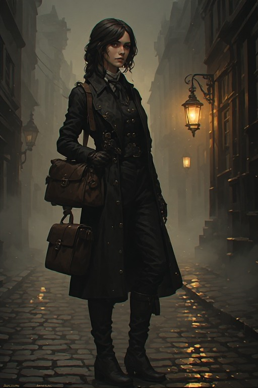
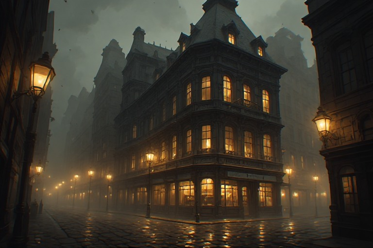
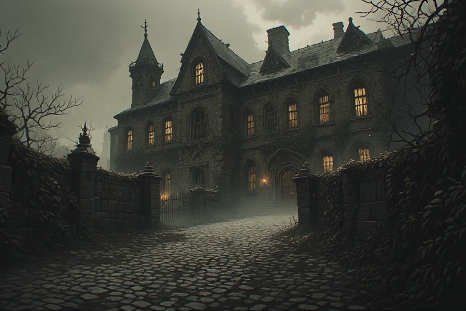
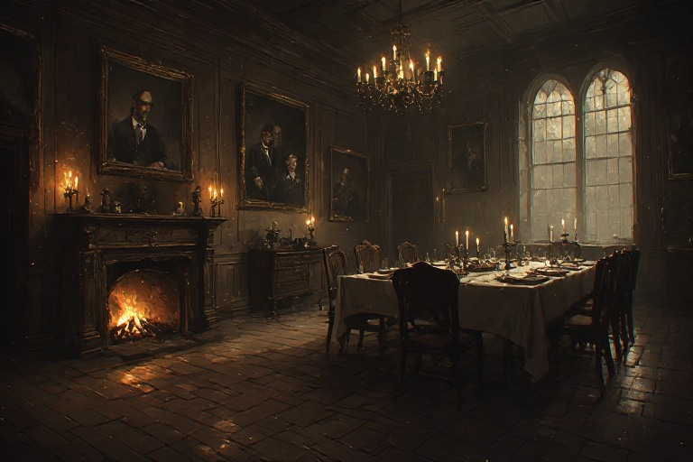
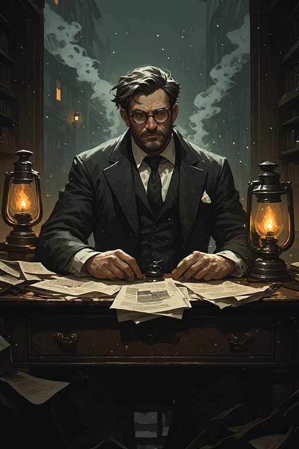
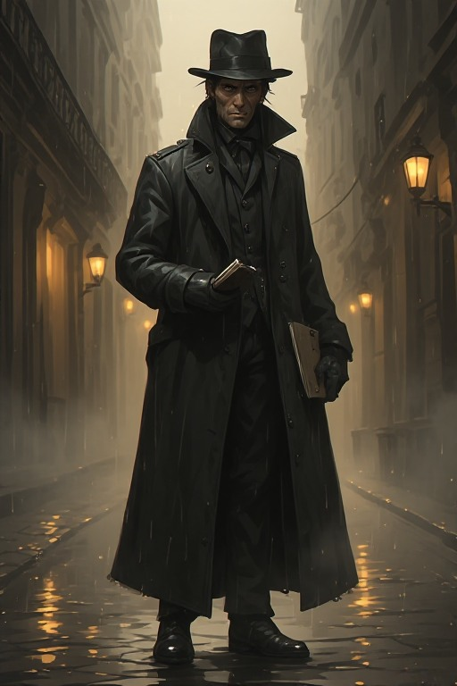
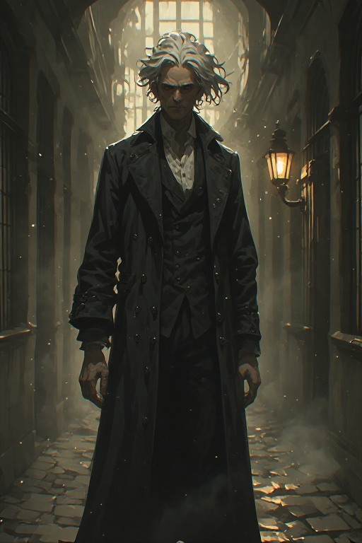
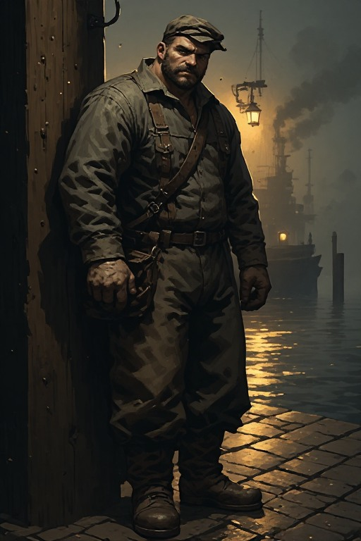
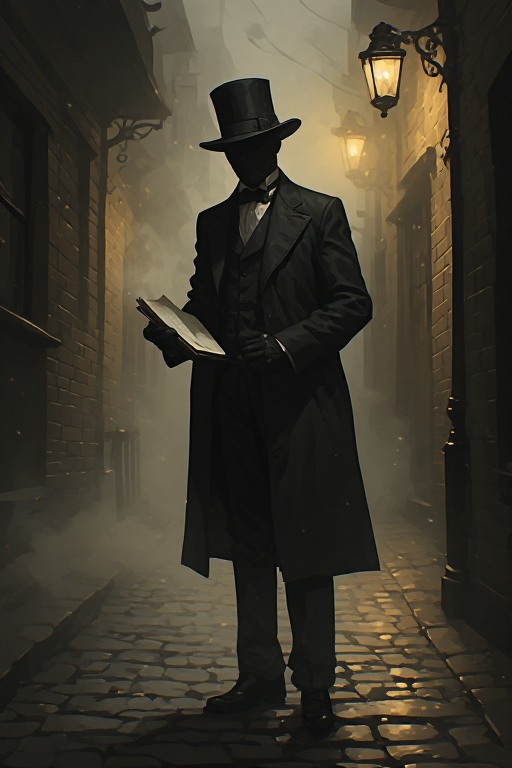

The Case
A merchant found posed, eyes sewn shut. A symbol cut into cloth near the body. The Dunhallow Metropolitan Police call it the work of a single killer. Edith Crane, investigative correspondent for The Dunhallow Sentinel, is not convinced.
There is no single killer. The Veil assigns each murder to a different member. The symbol is a shared signature — a collective mark. Edith must expose a distributed murder doctrine operating inside the city's institutions before its members realise she knows — and before the next name on their list is hers.
The deeper Edith goes, the more the doctrine's logic begins to seem internally coherent. The horror is not that it's irrational — it's that it isn't.

// Investigative Correspondent — The Dunhallow Sentinel
Edith Crane
Sharp, methodical, and operating in a city that does not want her to succeed. Edith has no authority, no badge, and no allies she can fully trust. What she has is ink, instinct, and an inability to leave a question unanswered.
Important Locations

I
The Sentinel Building
The pressroom never sleeps. Leads arrive here; so do threats.
II
The Ashburn Docks
Transient workers, sealed cargo, and a lockmaster who sees everything but talks to no one.

III
Greymire Hospital
Two victims were former patients. Dr. Pell uses methods no one fully understands.

IV
The Cartwright Club
Its private records room holds the thread Edith is not supposed to pull.
V
The Undercroft
Someone has been using them recently. The maps don't match what Edith finds.
Key Figures





— Greymire Hospital — private asylum — two victims were former patients — Dr. Pell's methods remain unreviewed —
Factions & Networks
The Veil
Members drawn from different classes, bound by a shared written creed called The Passage which justifies coordinated killing as social correction. No single leader — only a rotating Scribe.
Dunhallow Metropolitan Police
Not corrupt by design, but several officers owe favours to Cartwright Club members. Cray is the exception — and that makes him valuable and endangered.
The Dockworkers' Assembly
They distrust the police and the press equally. They knew the dock victims personally and hold information they won't give freely. Trust is earned slowly here.
Edith's Source Network
Informants, contacts, and reluctant witnesses scattered across Dunhallow. Any can be lost permanently if mishandled. Every relationship is an asset and a liability.
Investigation Methods
Method I
Evidence Reconstruction
Gather fragmented clues from multiple locations. Sources contradict each other — Edith must determine who is lying and why before the trail goes cold.
Method II
Source Management
Approach a reluctant witness. Extract information without burning trust. Read what the contact fears and find the right lever — pressure, sympathy, or exchange.
Method III
Infiltration & Access
Gain entry to a restricted location without being discovered. No violence. The tools are identity, timing, and social manoeuvre. One wrong step ends it.
Method IV
The Clock Quest
A name on a page Edith shouldn't have found. A limited window to intervene or expose the next action before it happens. Failure means the death proceeds.
Tone & Style
Dark and psychological throughout. The game never explains the horror — it reveals it incrementally. Atmosphere is built through detail: the smell of coal fog, a letter written in careful handwriting, a door that has been recently oiled. Violence is implied or discovered after the fact, never depicted in the moment. The player should feel like they are reading a case file that keeps getting worse.
Difficulty
| Level | Definition |
|---|---|
| Easy | Clues are clearly flagged. Contradictions resolved with one correct answer. Witnesses volunteer key details with minimal pressure. |
| Medium | Multiple valid interpretations of evidence. Some sources lie or withhold. Wrong deductions have narrative consequences that must be corrected. |
| Hard | No clue flags. False leads are indistinguishable from true ones. Missed evidence is gone permanently. The Veil adapts to Edith's actions. |